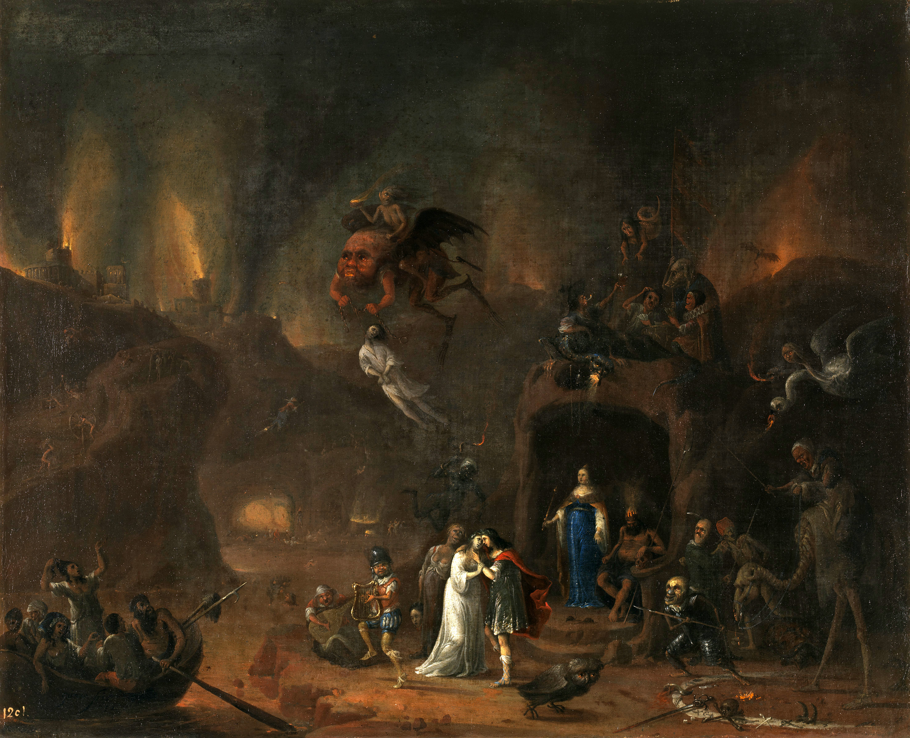
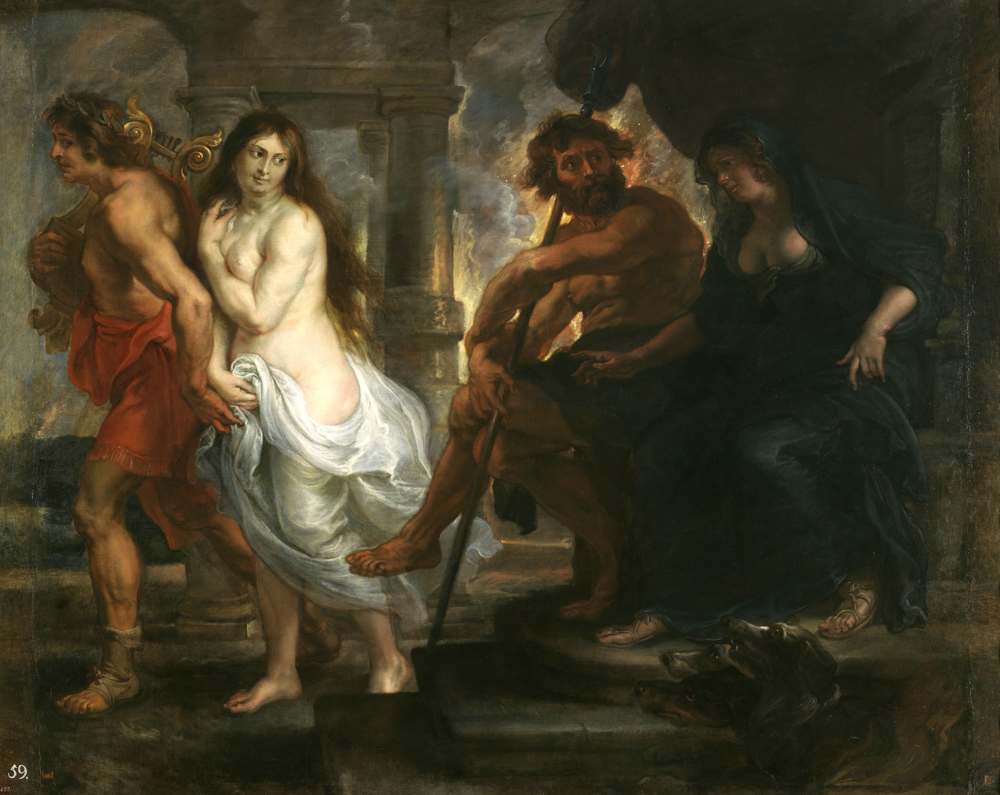

Paisaje con Orfeo y Eurídice
Orfeo es músico. Toca la lira.
Eurídice es su esposa. Orfeo la ama mucho.
1 / 5

La Muerte de Eurídice
Un día, una serpiente muerde a Eurídice. Ella muere.
Orfeo llora y toca su lira. Su música es muy triste.
2 / 5

Orfeo y Eurídice en los Infiernos
Orfeo decide ir al inframundo. Quiere buscar a Eurídice.
En el inframundo, Orfeo toca su lira.
Todos escuchan. Todo para.
3 / 5

Orfeo y Eurídice
El dios Hades escucha la música.
Dice: «Puedes llevar a Eurídice.»
Pero hay una condición:
«No puedes mirarla. No puedes mirar atrás.»
4 / 5

Orpheus Leading Eurydice from the Underworld
Orfeo camina. Eurídice camina detrás.
Casi llegan… pero Orfeo mira atrás.
Eurídice desaparece. Para siempre.
5 / 5
Fin del cuento
¿Por qué crees que Orfeo miró atrás?